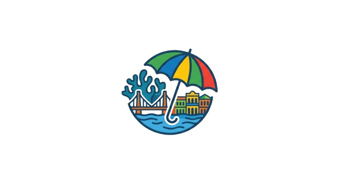

O que verá por aqui?
Explore rotas históricas, gastronomia autêntica e a cultura pulsante longe dos clichês turísticos tradicionais.

Descubra Pernambuco por outros ângulos
Explore rotas históricas, gastronomia autêntica e a cultura pulsante longe dos clichês turísticos tradicionais.
Começamos nossa jornada no Pátio de São Pedro e caminhamos pela riqueza colonial do Recife Antigo
Ler o roteiro do dia 01Aventuramo-nos pelas ladeiras artísticas de Olinda e pelos segredos guardados na Várzea.
Ler o roteiro do dia 02Conheça o grupo acadêmico por trás desta iniciativa de valorização do turismo pernambucano.
Ler o roteiro do dia 03Tem alguma sujestão de outros destinos e roteiros?
Fale com a gente.